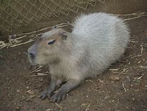
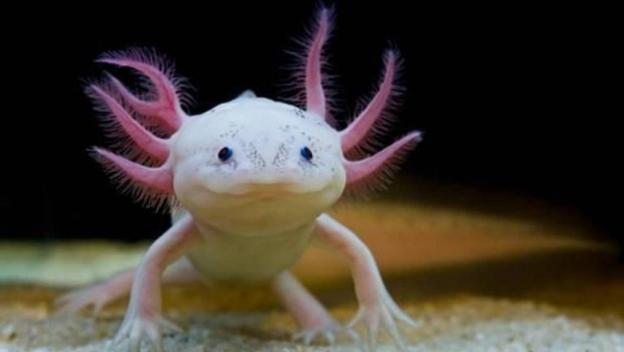

Animales Del Mundo
Para que un organismo se clasifique científicamente como animal deben tenerse en cuenta características a nivel celular, morfológico y fisiológico. No existe una definición breve para los animales, así que pasemos de una vez a ello, no tiene nada que ver pero los gatos, los chiguiros y los ajolotes son los mejores.
Desea mas informacion?